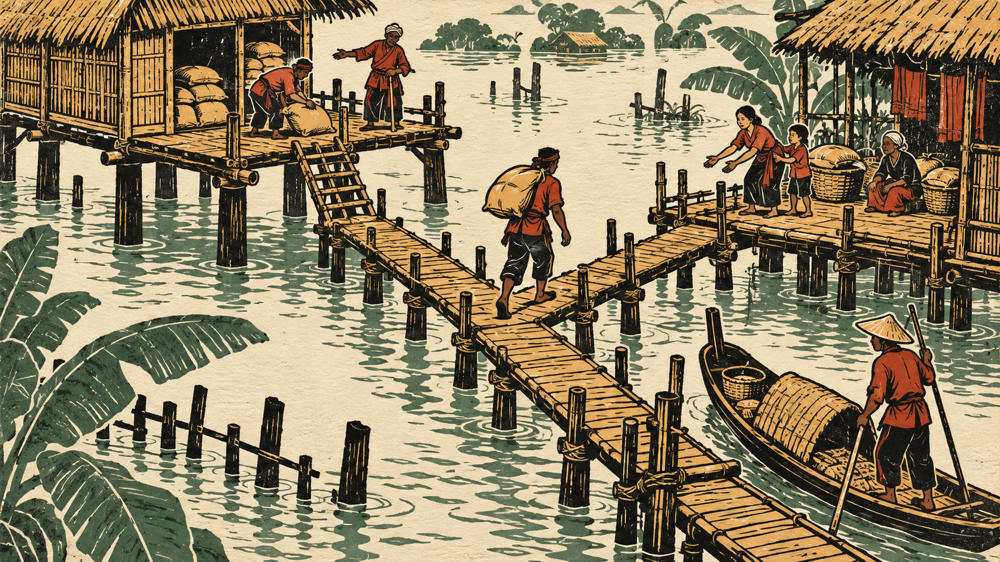

01 / A
Khắc gỗ · Mùa nước
Đường viền và mảng màu phẳng thử biến việc giữ lương thực, đi lại và giúp hàng xóm thành một cảnh có nhịp điệu đồ họa.
Muốn kiểm tra: nét khắc có bản sắc riêng mà vẫn đọc được người, vật và lối đi không?
KHÁM PHÁ NGÔN NGỮ ĐỒ HỌA
Khắc gỗ, pixel art hay giấy cắt? Lần này thử cả cách vẽ lẫn bối cảnh: làng mùa nước, xưởng đúc đồng và phiên chợ ven sông.
Ảnh mô phỏng · Chưa phải game chạy · Chờ bạn chốt

Thử tình huống đưa thóc lên kho cao.
Hướng khắc gỗ thử đường nét mạnh, mảng phẳng và số màu hạn chế để kể đời sống trong mùa nước.
Ba ảnh và bối cảnh độc lập; không phải camera của cùng một scene hoặc phép so sánh chỉ đổi phong cách.
Chưa tải được ảnh. Kiểm tra thư mục assets của bản thử nghiệm 07.
Đang xem phương án A.
Đổi ảnh bằng nút A / B / C hoặc phím 1 / 2 / 3. Chỉ giao diện xem ảnh có tương tác.
BA KỸ THUẬT THỂ HIỆN / BA BỐI CẢNH
Thử những khác biệt ở hình khối, đường nét, bảng màu và chất liệu, thay vì chỉ đổi góc máy trên cùng một cảnh.
Bối cảnh cũng thay đổi, nên cảm tình với một ảnh có thể đến từ câu chuyện hoặc bố cục. Muốn so riêng đồ họa, bước sau cần giữ cùng một tình huống.
01 / A
Đường viền và mảng màu phẳng thử biến việc giữ lương thực, đi lại và giúp hàng xóm thành một cảnh có nhịp điệu đồ họa.
Muốn kiểm tra: nét khắc có bản sắc riêng mà vẫn đọc được người, vật và lối đi không?
02 / B
Cụm pixel, silhouette và ánh sáng theo ô thử một ngôn ngữ game rõ ràng cho nghề nghiệp và đời sống lao động.
Muốn kiểm tra: cảnh có giữ được chiều sâu nghề nghiệp và vẻ trưởng thành khi chi tiết được giản lược?
03 / C
Mảng giấy chồng lớp và bóng đổ thử tạo thế giới có chất thủ công, nơi những cuộc gặp và chuyện làng thành trọng tâm.
Muốn kiểm tra: có sức hút và chiều sâu mà không biến đời sống nhân vật thành một mô hình trang trí?